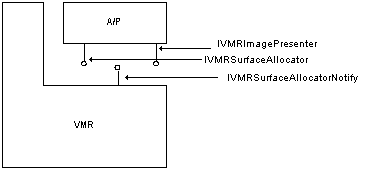
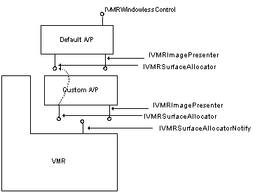

[The feature associated with this page, DirectShow, is a legacy feature. It has been superseded by MediaPlayer, IMFMediaEngine, and Audio/Video Capture in Media Foundation. Those features have been optimized for Windows 10 and Windows 11. Microsoft strongly recommends that new code use MediaPlayer, IMFMediaEngine and Audio/Video Capture in Media Foundation instead of DirectShow, when possible. Microsoft suggests that existing code that uses the legacy APIs be rewritten to use the new APIs if possible.]
The allocator-presenter is responsible for allocating DirectDraw surfaces and presenting the video frames for rendering. In the vast majority of scenarios, the functionality of the default allocator-presenter will be more than sufficient for an application's needs. But by plugging in a custom allocator-presenter, an application can obtain direct access to the video bits and completely control the rendering process. The trade-off for this increased power is that the application must handle the added complexity of DirectDraw surface management.

The preceding figure shows the communication interfaces used by the VMR and the allocator-presenter. A custom allocator-presenter that overrides all of the default allocation and presentation functionality must implement the IVMRImagePresenter and IVMRSurfaceAllocator interfaces, and optionally, IVMRWindowlessControl.
To replace the default allocator-presenter, an application calls the IVMRSurfaceAllocatorNotify::AdviseSurfaceAllocator method and passes in a pointer to the new allocator-presenter. In response to this call, the VMR will call the allocator-presenter's IVMRSurfaceAllocator::AdviseNotify method to provide the pointer to the VMR's IVMRSurfaceAllocatorNotify interface. The allocator-presenter will use this interface pointer when passing events to the VMR with the IVMRSurfaceAllocatorNotify::NotifyEvent method.
As an alternate solution, an application can use both its own allocator-presenter and the default allocator-presenter. In this scenario, the custom allocator-presenter handles only those calls where custom functionality is needed, and passes the rest of the calls from the VMR through to the default allocator-presenter. In many cases, it is only necessary to override the IVMRImagePresenter interface.

To use both a custom allocator-presenter and the default allocator-presenter, an application would first call IVMRSurfaceAllocatorNotify::AdviseSurfaceAllocator to provide a pointer to the new allocator-presenter. This causes the default allocator-presenter to be destroyed, so the application must create another instance of it by calling QueryInterface on the VMR and requesting the IVMRSurfaceAllocator interface. As shown in the preceding figure, the custom allocator-presenter overrides the IVMRImagePresenter interface methods, and simply passes all calls to the IVMRSurfaceAllocator interface through to the default implementation. The figure also shows the IVMRWindowlessControl interface as being implemented on the allocator-presenter.
Supplying a Custom Allocator-Presenter for VMR-9
VMR Renderless Playback Mode (Custom Allocator-Presenters)
Â
Â